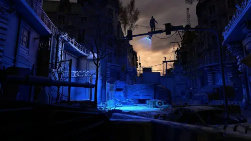
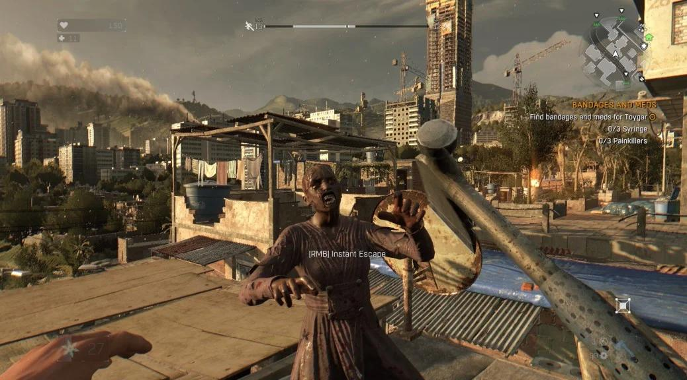
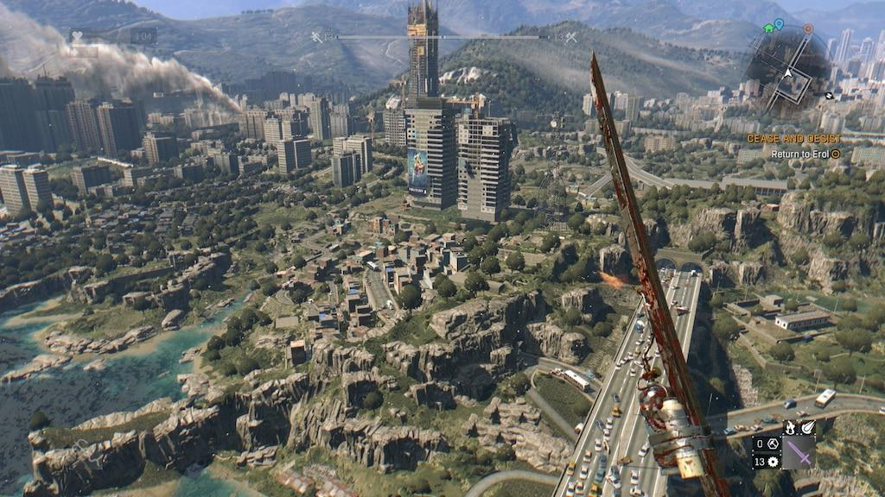
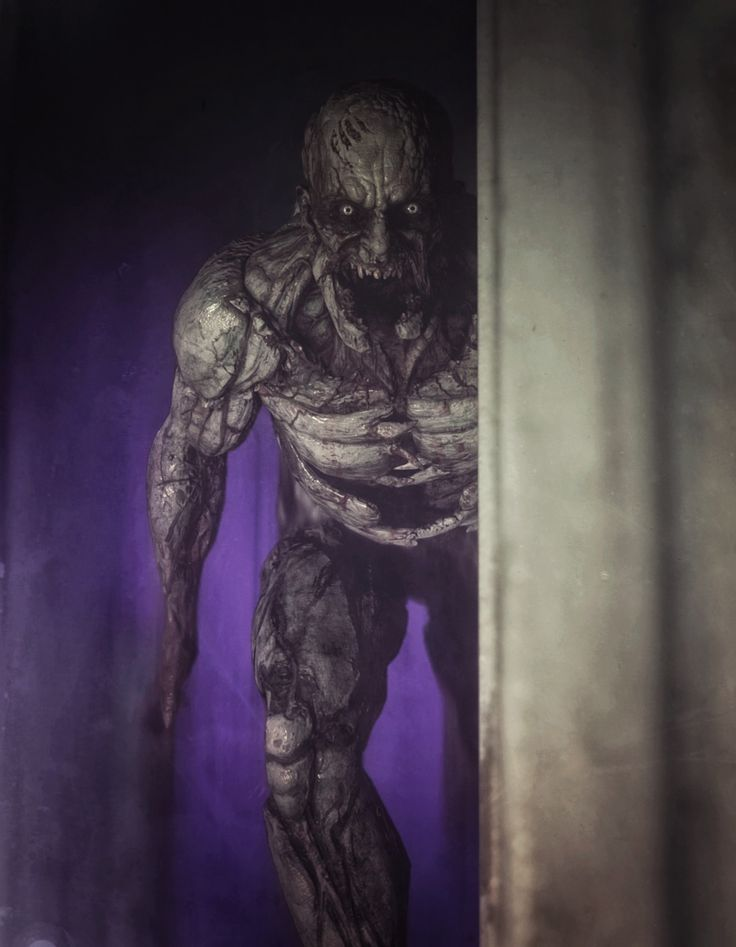

En conclusion, Dying Light est un jeu qui mélange action, exploration, peur et survie. Son ambiance inquiétante, ses combats et sa liberté de déplacement offrent une expérience intense dans un monde envahi par les zombies.
L'exploration occupe une place essentielle dans le jeu. La ville de Harran possède de nombreux bâtiments abandonnés, des rues dangereuses et des endroits secrets à découvrir. En fouillant ces lieux, le joueur peut récupérer des ressources, fabriquer des objets et améliorer son équipement pour survivre plus longtemps.
Le système de parkour permet de courir sur les toits, grimper aux bâtiments et sauter par-dessus les obstacles. Cette mécanique rend les déplacements dynamiques et offre plusieurs possibilités pour échapper aux ennemis. Il faut cependant rester prudent, car une mauvaise chute peut rapidement mettre le joueur en difficulté.
Le cycle jour-nuit change complètement l'ambiance du jeu. Pendant la journée, l'exploration est généralement plus accessible. Mais lorsque la nuit tombe, des créatures beaucoup plus dangereuses apparaissent. Chaque sortie devient alors un véritable défi qui demande de la prudence, de la rapidité et une bonne stratégie.
Les combats et la fabrication d'armes permettent également de varier le gameplay. Le joueur doit récupérer des matériaux, gérer ses ressources et améliorer ses compétences pour affronter des ennemis de plus en plus difficiles. Il est parfois préférable de fuir plutôt que de risquer sa vie dans un combat inutile.
L'histoire suit Kyle Crane, un agent envoyé à Harran pour accomplir une mission importante. Au fil de son aventure, il rencontre des survivants et découvre les difficultés d'un monde bouleversé par l'épidémie. Les conflits humains montrent que les zombies ne représentent pas l'unique menace.
L'ambiance visuelle et sonore renforce encore l'immersion. Les bâtiments abandonnés, les rues désertes et les cris des infectés donnent à Harran une atmosphère inquiétante. Chaque exploration réserve des surprises et oblige le joueur à rester attentif pour éviter les dangers qui l'entourent.